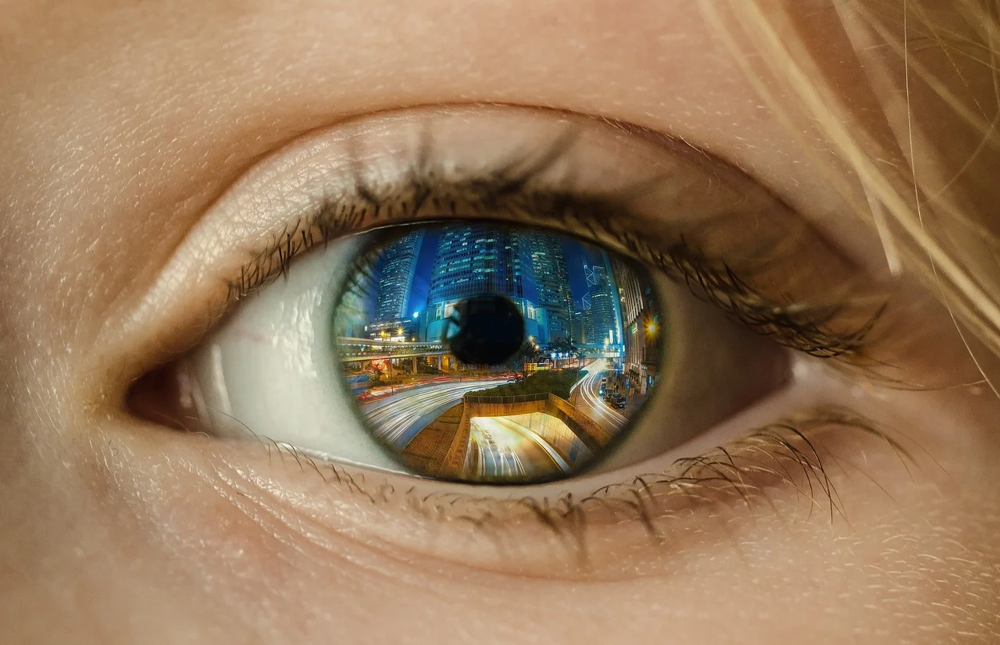
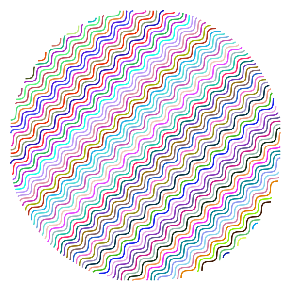

Visual Perception
The perception of time is affected by visuals. When visuals are used to indicate or remind people of the passage of time, the wait feels longer for shorter wait times, but not for longer wait times.1 The usage of human images on a site elicits a sense of warmth and sociality. It provides that sense that a human presence is there on the website, also creating a feeling of trust. However, this same effect was not felt for images that felt strange.2


For the images with mid levels of humans (the 2nd photo), more attention is paid towards them, even though they don't elicit as much trustworthyness or feelings of warmth as images with faces (the first one). Images without humans (the 3rd one) draw less warmth or trustworthiness than either of these images.
The use of visuals is also present with animations. Using animations, specifially that of a flash, helps reduce how long it takes a user to respond when searching for something, especially when there are a lot of items on screen. However, this effect is different for flashing items that people are looking for. Subsequent flashing leads to worse memory recall of said flashing element. When it comes to perception, adding this flash has a negative effect on attention and focus, distracting people away from text or other elements that are important. 3
When people view a website they look at how the website appears and how expressive it is. However, this will vary from person to person. People who are more task focused will prefer sites that are more organized and less expressive. While people who are just casually browsing will find sites that are more expressive and less organized more appealing. 4